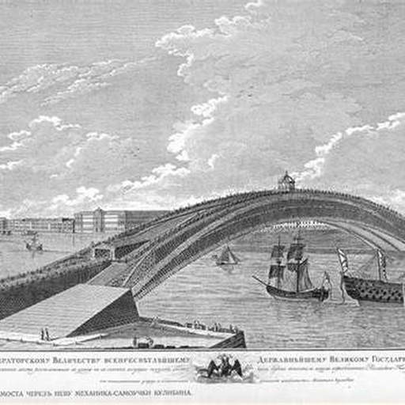
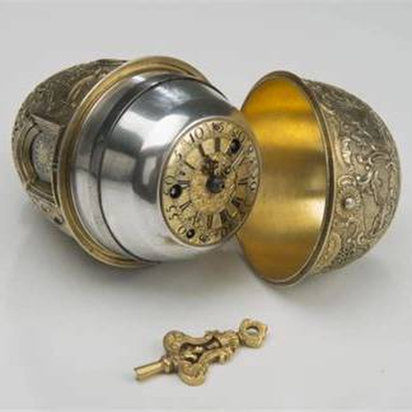
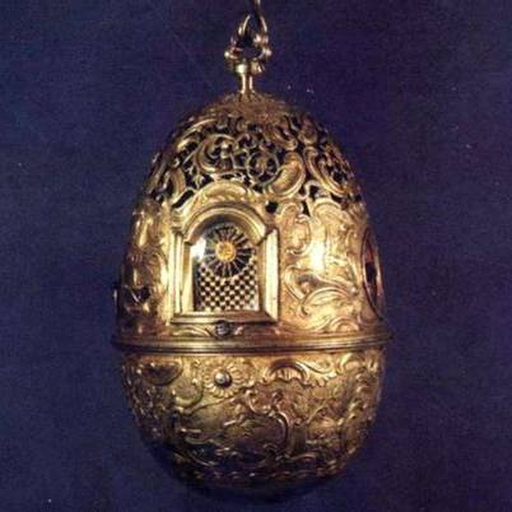
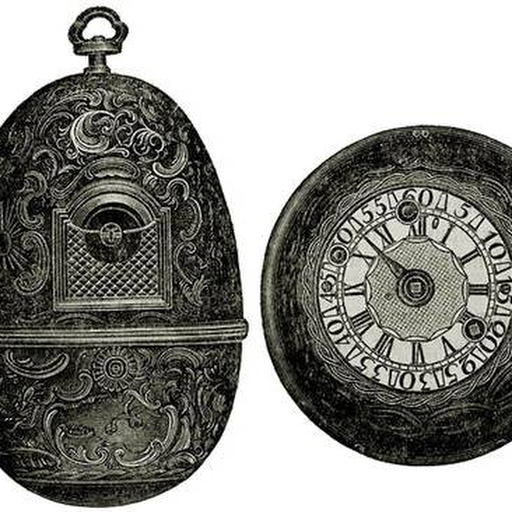
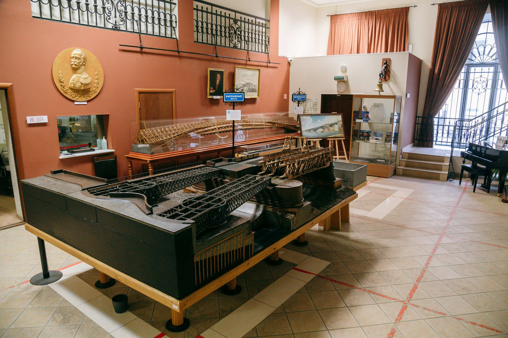
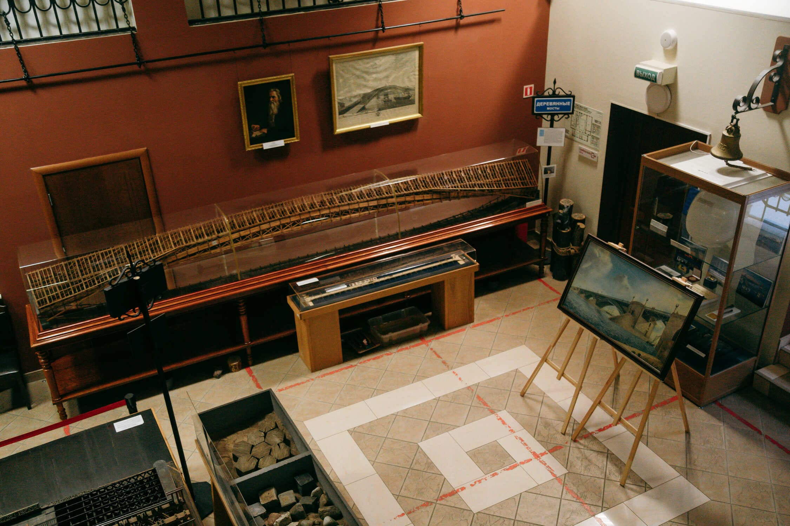
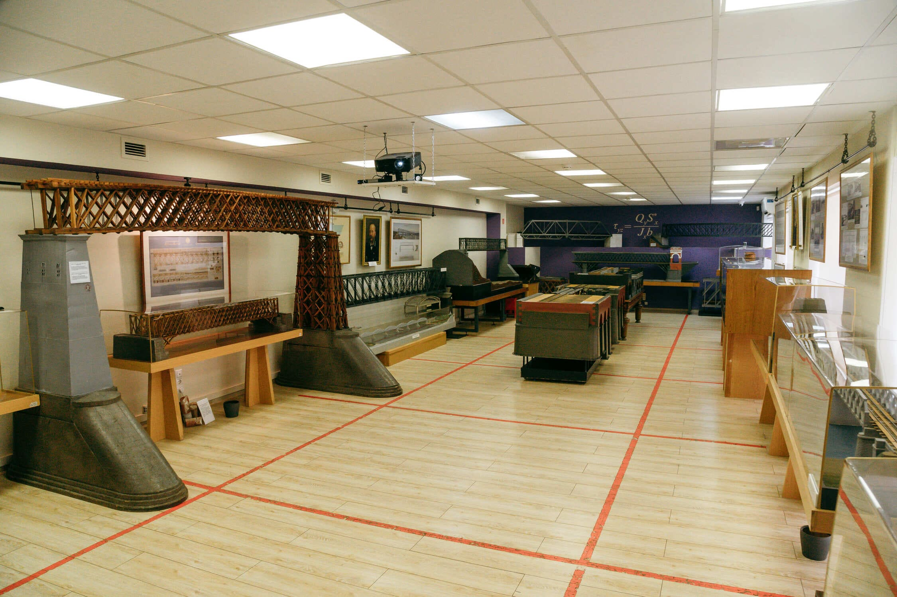
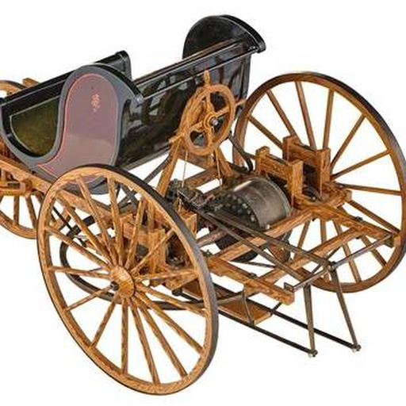
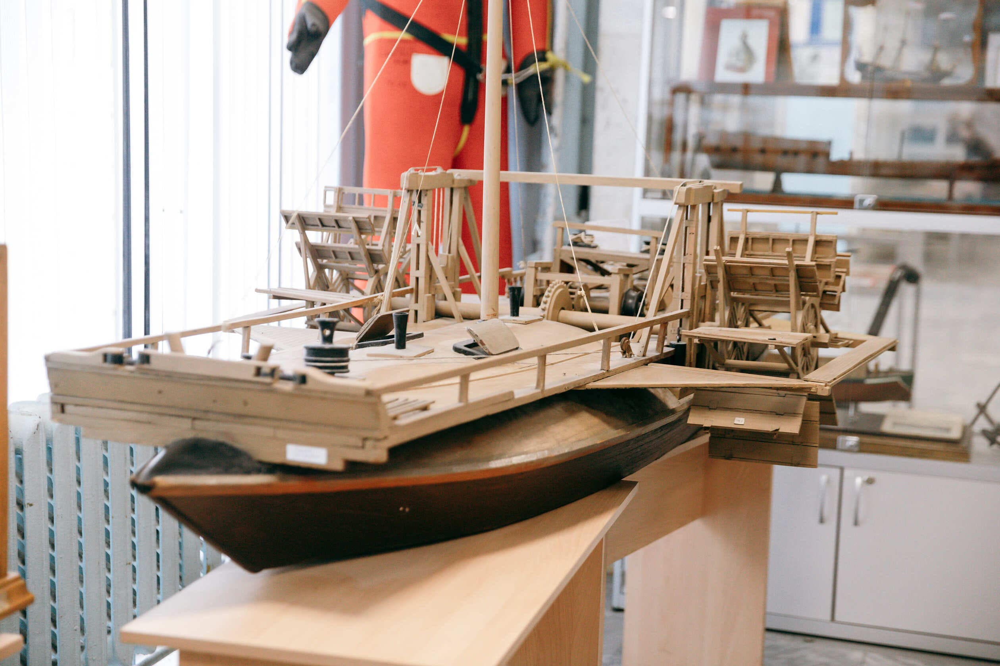
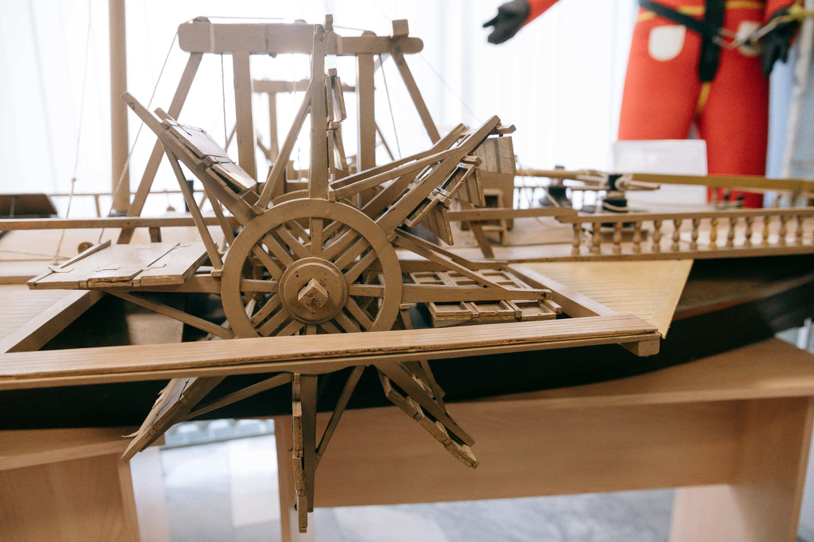

Часы в форме яйца
Механизм с сотнями деталей, движущимися фигурками и музыкальным боем стал подарком Екатерине II и принёс мастеру приглашение в Петербург.
Нижегородский механик • 1735–1818
Мастер-самоучка, который превращал точный расчёт и ручную работу в механизмы, опережавшие привычный масштаб своего времени.
Проект, который не был построен
Кулибин разработал проект деревянного арочного моста без промежуточных опор. Замысел предполагал один пролёт длиной около 300 метров — от Адмиралтейского берега к Васильевскому острову.
Для проверки прочности мастер изготовил модель. Сегодня она хранится в Государственном Эрмитаже; модель была представлена и на выставке в петербургском Музее мостов. Сам мост так и не построили, но проект остался одним из наиболее смелых инженерных замыслов эпохи.

Архивная графика из материалов проекта. Нажмите, чтобы открыть крупнее.
Механика, оптика, транспорт
Механизм с сотнями деталей, движущимися фигурками и музыкальным боем стал подарком Екатерине II и принёс мастеру приглашение в Петербург.
Трёхколёсная самоходная повозка с педальным приводом — предшественник персонального механического транспорта.
Судно с механическим приводом, задуманное для движения против течения, — один из опытов Кулибина в области речного транспорта.
Материалы из каталога проекта









Страница составлена по материалам, приложенным к проекту. Изображения сохранены локально для устойчивого просмотра через GitHub Pages; права на них принадлежат соответствующим музеям и источникам.